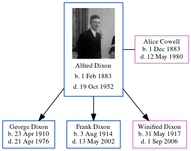

Alfred Dixon 1883 - 1952
[ Home ] | [ Calendar ] | [ Surnames Index ] | [ Census Index ] | [ Family History ]An iron molder, Alfred Dixon, the husband of Alice Sarah Cowell (the third cousin twice-removed on the mother's side of Nigel Horne), was born in Burham, Kent, England on Feb 1, 18831 and married Alice (with whom he had 3 children: George Alfred, Frank Ernest and Winifred Alice) in Medway, Kent, England around Nov 19083.
During his life, he was living at 112 Cecil Road, Rochester, Kent on Apr 2, 19114 and on Sep 29, 19391.
He died on Oct 19, 1952 in Chatham, Kent, England2.
Children
- George Alfred was born on Apr 23, 1910
- Frank Ernest was born on Aug 3, 1914
- Winifred Alice was born on May 31, 1917
Citations
- 1939 Register - Findmypast (was the head of the household)
- England & Wales deaths 1837-2007 - Findmypast
- England & Wales marriages 1837-2008 - Findmypast
- 1911 Census for England & Wales - Findmypast (was age 28 and the head of the household)
Media
Alfred Dixon

1939 Register Transcription - TNA-R39-1772-1772J-023-41
1939 Register Transcription - TNA-R39-1772-1772J-023-40
England & Wales deaths 1837-2007 - BMD/D/1952/4/AZ/000266/091
Family Tree
Generated by ged2site. Last updated on Jun 11, 2024